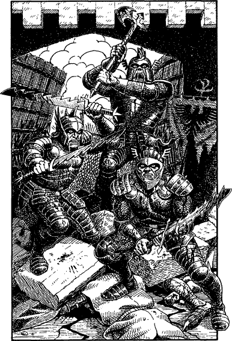

272
The misguided knight falls unconscious at your feet. Before he recovers, you take to your heels and continue on across the plain which leads inexorably towards the gates of Darke.
As you approach the city, the din of battle fills your ears. The shouts of angry men, the neighs of galloping steeds, the clang of riven steel, and the terrible screams of the slain buffet you remorselessly. Then, all of a sudden, you are plunged into the battle and to survive you are forced to cleave your way through a seemingly endless wall of enemy troops. It is as if they are gladly willing to sacrifice themselves in order to prevent you from reaching the apex of the slope that ascends to the shattered gates of the city. Undeterred, you forge a bloody path through this Drakkarim horde, wielding your weapon with deadly precision, every blow claiming an enemy soul. It is not until you are standing upon the very threshold of the gates that you encounter more formidable defenders. The breached gates are being held by a trio of blood-spattered Tukodak. They are in a state of battle-frenzy which you sense has been magically induced. Wild-eyed with savage bloodlust, they scream maniacally as they rush at you with their bloodied blades.

‘For Sommerlund!’ you cry, as you steel yourself to meet their attack.
3 Tukodak Guardians (in battle-frenzy): COMBAT SKILL 44 ENDURANCE 44
If you win this combat, turn to 125.